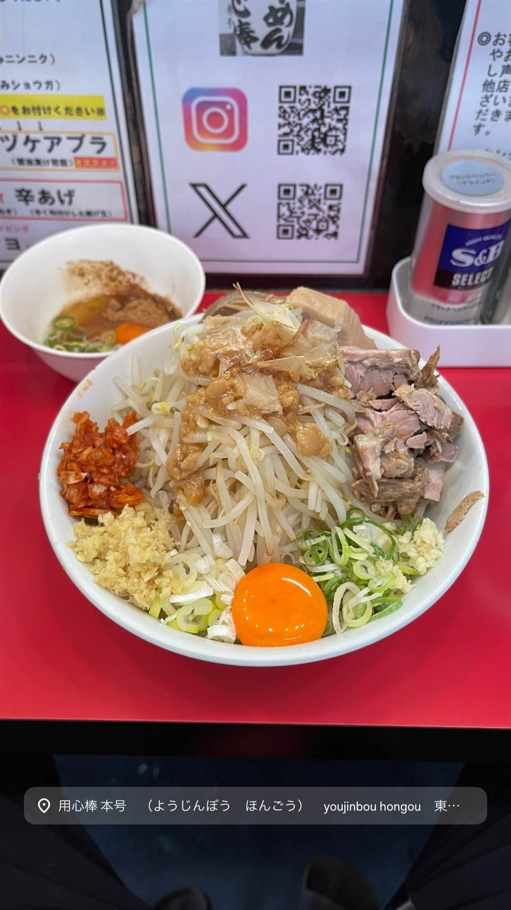

★ 推し二郎系(インスパイア)で7位
ラーメン用心棒 本号
千里眼の系譜を継ぐ、濃厚豚骨醤油と極太麺のまぜそば
用心棒 本号 （ようじんぼう…
目黒区駒場の人気二郎系「千里眼」の系譜を継ぎ、2009年に神保町で始まった「用心棒」。その直営2号店として2010年に東大前に開いたのが本号で、濃厚豚骨醤油に極太麺、まぜそばが評判の二郎インスパイア系。

TRIVIA
へえ、という話
- 目黒区駒場の名店『千里眼』の系譜を引く二郎系グループ
- 神保町本店の直営2号店として東大前に開店した
- 系列にはさらに市ヶ谷飯田橋店もある
REVIEWS
みんなの声
94.247ラーメンDB3.61食べログ
「夏季限定冷やしまぜそばの高評価」に注目
- 夏季限定の冷やしまぜそばが非常に美味しいと高く評価されている
- 二郎系の中でも食べやすく小盛りでも十分満足できるという声がある
- 夏季限定メニューは満席や行列になるほど人気だという声も多い
ラーメンデータベース 口コミ370件・総合490位・最新 2026-09
| 創業 | 2010年9月19日開店 |
|---|---|
| 系譜 | 目黒区駒場の人気二郎系「千里眼」の系譜。2009年3月21日開業の神保町「用心棒」を本店とする直営系列の2号店で、後に市ヶ谷飯田橋店（2019年7月26日）も加わった |
| 看板 | まぜそば、ラーメン（濃厚豚骨醤油・極太麺） |
| こだわり | にんにくマシが定番の二郎系スタイルで、濃厚豚骨醤油スープに極太麺を合わせる |
| どこから | 都心 |
| いつ行けるか | 行列 |
| 予算 | 昼 ～¥999 夜 ¥1,000～¥1,999 |
| 定休日 | 年末年始のみ |
| 予約 | 予約不可 |
| 場所 | 東大前 東京都文京区向丘1-20-6 |
| 注意 | カウンターのみ。麺量は300g（普通）〜500g（大）まで選べる |
食べたもの：まぜそば / まぜそば
NEARBY
近い店・同じ系統の店
-
 ★
二郎系(インスパイア) 新小岩駅
Hi-Fat Noodle BUTCHER'S
「脂と肉を武器にする」がコンセプトの二郎系2号店
昼 ¥1,000～¥1,999 夜 ¥1,000～¥1,999
★
二郎系(インスパイア) 新小岩駅
Hi-Fat Noodle BUTCHER'S
「脂と肉を武器にする」がコンセプトの二郎系2号店
昼 ¥1,000～¥1,999 夜 ¥1,000～¥1,999
-
 ★
二郎系(インスパイア) 高田馬場駅(早稲田口)
ラーメン 池田屋 高田馬場店
京都一乗寺発の二郎系が東京初進出、豚の旨味濃厚な一杯
昼 ¥1,000～¥1,999 夜 ¥1,000～¥1,999
★
二郎系(インスパイア) 高田馬場駅(早稲田口)
ラーメン 池田屋 高田馬場店
京都一乗寺発の二郎系が東京初進出、豚の旨味濃厚な一杯
昼 ¥1,000～¥1,999 夜 ¥1,000～¥1,999
-
 ★
二郎系(インスパイア) 東北沢駅／駒場東大前駅
千里眼（センリガン）
夏季限定の冷やし中華も人気の二郎系インスパイア
昼 ～¥999 夜 ～¥999
★
二郎系(インスパイア) 東北沢駅／駒場東大前駅
千里眼（センリガン）
夏季限定の冷やし中華も人気の二郎系インスパイア
昼 ～¥999 夜 ～¥999
-
 ★
二郎系(インスパイア) 大山
自家製麺 No11
富士丸出身の店主が繰り出す350g極太麺の二郎系
夜 ¥1,000～¥1,999
★
二郎系(インスパイア) 大山
自家製麺 No11
富士丸出身の店主が繰り出す350g極太麺の二郎系
夜 ¥1,000～¥1,999
-
 ★
二郎系(インスパイア) 大井町
ザ・ラーメン スモールアックス
二郎系なのに麺量250gと少なめで食べやすい一杯
昼 ～¥999 夜 ～¥999
★
二郎系(インスパイア) 大井町
ザ・ラーメン スモールアックス
二郎系なのに麺量250gと少なめで食べやすい一杯
昼 ～¥999 夜 ～¥999
-
 ★
二郎系(インスパイア) 反町駅
MEN YARD FIGHT
二郎系「蓮爾」登戸店仕込みの縄のように極太な麺
夜 ¥1,000～¥1,999
★
二郎系(インスパイア) 反町駅
MEN YARD FIGHT
二郎系「蓮爾」登戸店仕込みの縄のように極太な麺
夜 ¥1,000～¥1,999